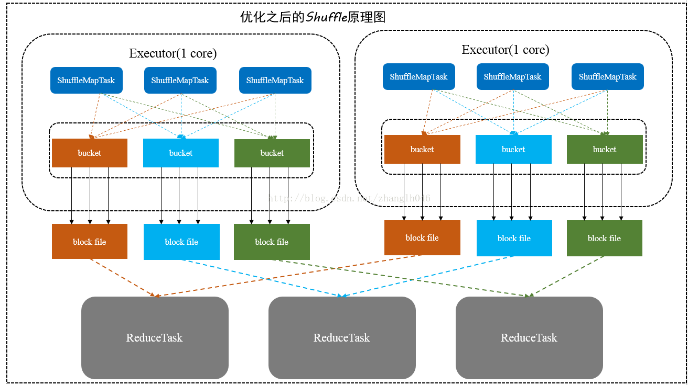

1. Shuffle
1.1. 怎么定义Shuffle
Shuffling is a process of redistributing data across partitions1
Shuffling is the process of data transfer between stages
在DAG阶段以shuffle为界，划分stage，

目的： 解决数据平衡问题
主要操作：
-
shuffle write
上游stage做map task，每个map task将计算结果数据分成多份，每一份对应到下游stage的每个partition中，并将其临时写到磁盘，该过程叫做shuffle write -
shuffle read
下游stage做reduce task，每个reduce task通过网络拉取上游stage中所有map task的指定分区结果数据，该过程叫做shuffle read
Shuffle涉及到磁盘IO(shuffle中间结果落地)、CPU计算（数据序列化计算)、网络IO(跨节点数据传输)。
Shuffle的内存压力
Shuffle操作会占用大量的堆内存，在传输data之前或者之后，都会使用内存中的数据结构去组织这些record。也就是说，在map端，会创建这些structures，在reduce端会生成这些structures。在内存中存不下时，就会写到磁盘中。
组织数据过程：
1. 一系列map任务；
2. shuffle这些data；
3. 聚合data：一系列reduce任务。
一些map的结果会写到内存里，当太大时，会以分区排好序，然后写到单个文件里。在reduce端，task会读取相关的有序的block。
Shuffle的磁盘压力
Shuffle操作会在磁盘上生成大量的中间文件，并且在RDD不再被使用并且被垃圾回收之前，这些文件都将被一直保留。因为lineage(血统,DAG图)要被重新计算的话，就不会再次shuffle了。如果保留RDD的引用或者垃圾回收不频繁，那么Spark会占用大量的磁盘空间。
文件目录可由spark.local.dir配置。
我们可以在Spark的配置指南中配置各种参数
1.2. 原理
1.2.1. 发展进程
- Spark<1.1,一直是采用Hash Shuffle的实现的方式，
- Spark=1.1,版本时参考Hadoop MapReduce的实现开始引入Sort Shuffle，
- Spark=1.5,开始Tungsten钨丝计划，引入UnSafe Shuffle优化内存及CPU的使用，
- Spark=1.6,Tungsten统一到Sort Shuffle中，实现自我感知选择最佳Shuffle方式（Smart Shuffle ），
- Spark=2.0,Hash Shuffle已被删除，所有Shuffle方式全部统一到Sort Shuffle一个实现中。
下图是spark shuffle实现的一个版本演进。

1.2.2. V1 Hash Shuffle

2个 map task， 3个 reducer， 会产生 6 个小文件

4个 map task， 3个 reducer， 会产生 12个小文件
m个 map task， n个 reducer， 会产生 m*n个小文件
目标之一就是避免不需要的排序（Hadoop Map Reduce被人诟病的地方，很多不需要sort的地方的sort导致了不必要的开销）。
但是它在处理超大规模数据集的时候，产生了大量的DiskIO和内存的消耗，这无疑很影响性能。对文件系统压力大
1.2.3. V2 Sort Shuffle

4个 map task， 3个 reducer，2个core 会产生 6个小文件

6个 map task， 3个 reducer，2个core 会产生 6个小文件
同一core(节点/执行器)上运行的多个Mapper 输出的合并到同一个文件。这样文件数目就变成了 cores x n
针对file
记录进行排序来做shuffle
它会将所有的结果写到一个文件里，同时会生成一个index文件，Reducer可以通过这个index文件取得它需要处理的数据

1.2.3.1. 实现策略
sort-Based Shuffle 有几种不同的策略：
BypassMergeSortShuffleWriter、SortShuffleWriter和UnasfeSortShuffleWriter。

1.2.3.1.1. BypassMergeSortShuffleWriter
对于BypassMergeSortShuffleWriter，使用这个模式特点：
-
主要用于处理不需要排序和聚合的Shuffle操作，所以数据是直接写入文件，数据量较大的时候，网络I/O和内存负担较重
-
主要适合处理Reducer任务数量比较少的情况下
-
将每一个分区写入一个单独的文件，最后将这些文件合并,减少文件数量；但是这种方式需要并发打开多个文件，对内存消耗比较大
因为BypassMergeSortShuffleWriter这种方式比SortShuffleWriter更快，所以如果在Reducer数量不大，又不需要在map端聚合和排序，而且Reducer的数目 < spark.shuffle.sort.bypassMergeThrshold指定的阀值，就是用的是这种方式。
1.2.3.1.2. SortShuffleWriter
对于SortShuffleWriter,使用这个模式特点：
-
比较适合数据量很大的场景或者集群规模很大
-
引入了外部外部排序器，可以支持在Map端进行本地聚合或者不聚合
-
如果外部排序器enable了spill功能，如果内存不够，可以先将输出溢写到本地磁盘，最后将内存结果和本地磁盘的溢写文件进行合并
另外这个Sort-Based Shuffle跟Executor核数没有关系，即跟并发度没有关系，它是每一个ShuffleMapTask都会产生一个data文件和index文件，所谓合并也只是将该ShuffleMapTask的各个partition对应的分区文件合并到data文件而已。所以这个就需要个Hash-BasedShuffle的consolidation机制区别开来。
1.2.3.1.3. UnasfeSortShuffleWriter
从spark 1.5.0开始，spark开始了钨丝计划(Tungsten)，目的是优化内存和CPU的使用，进一步提升spark的性能。为此，引入Unsafe Shuffle，它的做法是将数据记录用二进制的方式存储，直接在序列化的二进制数据上sort而不是在java 对象上，这样一方面可以减少memory的使用和GC的开销，另一方面避免shuffle过程中频繁的序列化以及反序列化。在排序过程中，它提供cache-efficient sorter，使用一个8 bytes的指针，把排序转化成了一个指针数组的排序，极大的优化了排序性能。更多Tungsten详细介绍请移步databricks博客。
但是使用Unsafe Shuffle有几个限制，shuffle阶段不能有aggregate操作，分区数不能超过一定大小(224−1，这是可编码的最大parition id)，所以像reduceByKey这类有aggregate操作的算子是不能使用Unsafe Shuffle，它会退化采用Sort Shuffle。
1.2.4. smart Shuffle

1.4. 编程实践的注意事项
用户在编写spark应用程序的时候应当尽可能考虑shuffle相关的优化，提升spark应用程序的性能。下面简单列举几点关于spark shuffle调优的参考。
- 尽量减少shuffle次数
// 两次shuffle rdd.map(...).repartition(1000).reduceByKey(_ + _, 3000) // 一次shuffle rdd.map(...).repartition(3000).reduceByKey(_ + _)
- 必要时主动 shuffle，通常用于改变并行度，提高后续分布式运行速度
rdd.repartiton(largerNumPartition).map(...)...
- 使用 treeReduce & treeAggregate 替换 reduce & aggregate。
数据量较大时， reduce & aggregate 一次性聚合，shuffle量太大，而 treeReduce & treeAggregate 是分批聚合，更为保险。